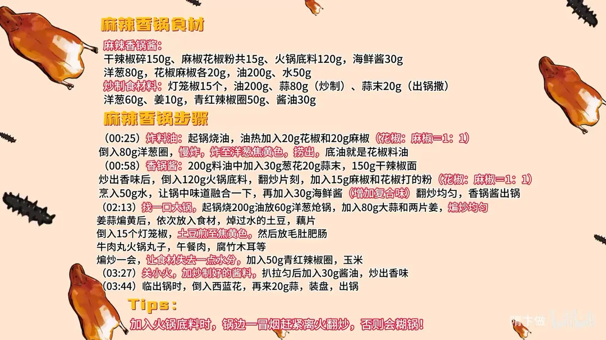

麻辣香锅
隋卞一做。先以花椒、麻椒各 20g 炸出料油，再用 200g 料油炒 150g 干辣椒碎、120g 火锅底料和 30g 海鲜酱成酱；另起锅用 200g 油炝锅，土豆藕片煎至焦黄，下丸类肥肠等煸干水分，关小火拌酱、30g 酱油调味。
原视频：https://www.bilibili.com/video/BV1qf421i7MX
食材
干辣椒碎、麻椒花椒粉、火锅底料 等 17 样
| 类别 | 用料 | 用量 |
|---|---|---|
| 香锅酱 | 干辣椒碎 | 150g |
| 香锅酱 | 麻椒花椒粉 | 共 15g |
| 香锅酱 | 火锅底料 | 120g |
| 香锅酱 | 海鲜酱 | 30g |
| 香锅酱 | 洋葱 | 80g |
| 香锅酱 | 花椒 | 20g |
| 香锅酱 | 麻椒 | 20g |
| 香锅酱 | 油 | 200g |
| 香锅酱 | 水 | 50g |
| 炒制 | 灯笼椒 | 15 个 |
| 炒制 | 油 | 200g |
| 炒制 | 蒜 | 80g（炒制） |
| 炒制 | 蒜末 | 20g（出锅撒） |
| 炒制 | 洋葱 | 60g |
| 炒制 | 姜 | 10g |
| 炒制 | 青红辣椒圈 | 50g |
| 炒制 | 酱油 | 30g |
步骤
- 炸料油：起锅烧油，油热后加入 20g 花椒和 20g 麻椒（花椒∶麻椒＝1∶1），倒入 80g 洋葱圈，慢炸，炸至洋葱焦黄色捞出，底油就是花椒料油。
- 炒香锅酱：200g 料油中加入 30g 葱花、20g 蒜末、150g 干辣椒碎，炒出香味后倒入 120g 火锅底料，翻炒片刻；加入 15g 麻椒和花椒打的粉（花椒∶麻椒＝1∶1），烹入 50g 水，让锅中味道融合一下，再加入 30g 海鲜酱增加复合味，翻炒均匀，香锅酱出锅。
- 炝锅：找一口大锅，起锅烧 200g 油，放 60g 洋葱炝锅，加入 80g 大蒜和两片姜，煸炒均匀。
- 下料煸炒：姜蒜煸黄后依次放入食材——焯过水的土豆、藕片；倒入 15 个灯笼椒，土豆煎至焦黄色；然后放毛肚、肥肠、牛肉丸、火锅丸子、午餐肉、腐竹、木耳等，煸炒一会，让食材失去一点水分；加入 50g 青红辣椒圈、玉米。
- 拌酱调味：关小火，加炒制好的酱料，扒拉匀后加入 30g 酱油，炒出香味。
- 出锅：临出锅时倒入西蓝花，再来 20g 蒜，装盘出锅。
小贴士
- 加入火锅底料时，锅边一冒烟赶紧离火翻炒，否则会糊锅。
讲解要点
难度：★★☆☆☆（食材随便换，难点在熬香锅酱的火候，一糊全锅苦）
为什么这么做
- 花椒麻椒一比一，加洋葱慢炸成料油：花椒出香、麻椒出麻，洋葱炸到焦黄让油带上一点甜香，捞出后这锅油就是整锅的底味；香料能简化就简化，做得出来比做得多重要。
- 辣椒面用粗打的：细辣椒面下锅就糊，粗颗粒耐炒，香味是慢慢释放出来的。
- 火锅底料下锅就关小火、见锅边冒烟立刻离火：底料里有糖和大量辣椒，油温一冲就焦，糊了整锅酱都发苦。
- 再补一遍花椒麻椒粉：整粒花椒在炸料油时香味已经耗掉大半，补粉才能把麻味顶回来。
- 烹一点水、加海鲜酱：水让酱里各种香味融合在一起，海鲜酱给酱增加复合的鲜味和厚度。
- 食材先煎干、煸干水分：土豆藕片煎到焦黄，丸类肥肠煸到失水，食材失了水才吸得住酱，味道才「不薄」，成菜麻辣干香。
- 关小火再拌酱，西蓝花和生蒜最后下：大火拌酱必糊；西蓝花只是点缀，久炒发黄；生蒜最后下才保得住蒜香。
容易翻车
- 辣椒面炒糊——锅边一冒烟就得离火，不是等闻到焦味。
- 酱下锅后还开大火翻炒，糊底、发苦。
- 土豆藕片、丸子没提前处理，外面焦了里面还生。
- 油放少了，酱挂不住食材，味道发薄。
- 酱一次全倒进去，咸度失控，没法回头。
热评补充
- 食材要提前处理到熟：下锅只是借油借味、煸掉水分，生料直接扔进去出不来这锅效果。
原片尾卡

原片文案
AI 字幕校准稿
前两天我跟小李出去逛街，点了一小锅麻辣香锅，还得要我 100 多。我一下就把麻辣香锅的制作公布于世，让你们在家实现麻辣香锅自由。
不过咱这一桌东西也太多了吧，公司的人一人点一两样就变成这一桌子了。在家里面你只要把这个香锅酱学会了，里边放什么东西就看个人喜好。
锅里边加油，先把花椒倒进去，花椒跟麻椒一样一半，具体的比例你们不用记，加点洋葱，做一个花椒油、一个料油，慢炸，把花椒味和麻椒味全都炸出来。好多师傅用的香料可能比我的多，但是我能简化的都给你们简化掉了——能做出来比做得好重要。炸成什么样？你看那个洋葱焦黄色了，就一块捞就行了。
葱花小火状态，下蒜末，然后倒入辣椒面，粗打的，倍儿红。这是我自己磨的辣椒面，拿打碎器打的，你看还有半拉没打碎。炒出香味之后，把火锅底料倒进去，关小火。这里为啥要离火呢？一看这锅边一冒烟，你赶紧离火，这个辣椒面特别容易炒糊。然后加入麻椒跟花椒一样一半打的粉，再补一点麻味。少烹一点水，让里边的味道融合一下。
是不是现在加开水涮火锅也好吃？现在这个东西可以，没问题，其实这就可以涮火锅了。尝尝麻辣的怎么样？不会我再给你加点。我吃肯定不够辣，我是吃辣王。真好吃。再加点海鲜酱，增加一个复合味。好了，这个酱就算熬好了。
然后找一个咱们公司最大的锅，起锅烧油，放洋葱下锅，全程大火，加上大蒜，还有两片姜。把蒜、葱、洋葱都煸黄，依次放准备好的食材：焯过水的土豆、藕片，把灯笼椒也倒里边，增加美观。一定要把这土豆煎到有点焦黄了。这会儿放毛肚、肥肠、牛肉丸、火锅丸子、海带节、午餐肉、腐竹、木耳、香菇、豆皮、虾仁。这样炒的作用是让它们都失去一点水分。对，辣椒加进去，玉米。
关小火，加酱扒拉匀了，加酱油，炒出香味调味。临出锅的时候把西蓝花倒进去，它也是一个点缀物。出锅再来点蒜。先把方便面铺在盘底，平铺开来，把这个往上面一倒。
嗯，好吃，还可以吧？非常相当之可以。这个味道我觉得比较大众，也不是极端的辣，也不是极端的麻，好吃，他吃着不油。所有的食材炒过以后失去水分，又把那个味道吸得特别特别的足，所以它的味道才吃着不薄，麻辣干香。
我调味的时候你是只放了点酱油，其他调料都没放？它本身那个辣椒的香味就足够，香味特别好吃。这个辣度决定于什么？决定于您选的那个辣椒面的品种。大家回去试一下，然后可以自己在家里面做麻辣香锅了。